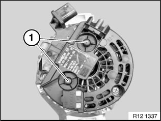
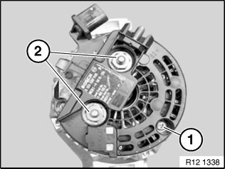
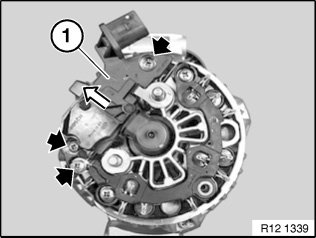
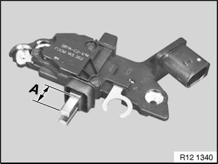
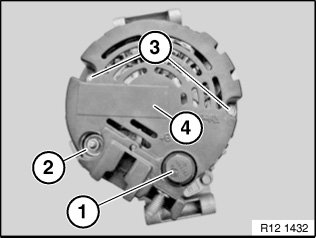
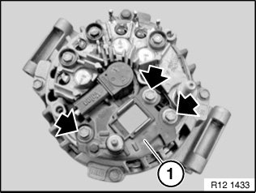
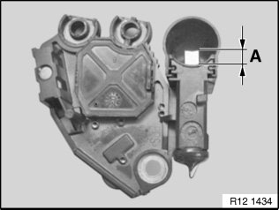
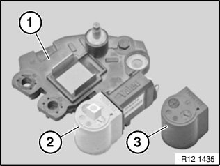

Voltage Regulator: Service and Repair
12 32 501 Replacing Voltage Regulator

Necessary preliminary tasks:
- Switch off ignition
- Disconnect battery negative lead
- Notes on removing and installing electronic control units
- Remove alternator

Bosch:
Release protective caps (1).

Bosch:
Release screw (1) and nuts (2), remove cover.

Bosch:
Release screws and remove regulator switch (1) in direction of arrow.

Bosch:
Installation:
Clean contact surfaces and check pretension of contact spring, replace regulator switch if necessary.
Measurement A = min. 5 mm.
Check collector ring for wear and recondition if necessary.

Valeo:
Slacken nut (1).
Slacken nut (2).
Release screws (3).
Release cover (4).

Valeo:
Release screws.
Remove regulator switch (1) towards top.

Valeo:
Installation:
Clean contact surfaces and check pretension of contact spring, replace regulator switch if necessary.
Measurement A = min. 5 mm.
Check collector ring for wear and recondition if necessary.

Installation:
Fit new regulator (1) with attached mounting sleeve (2) or locked carbon brush.
Pull off mounting sleeve (2) and replace with cover (3).